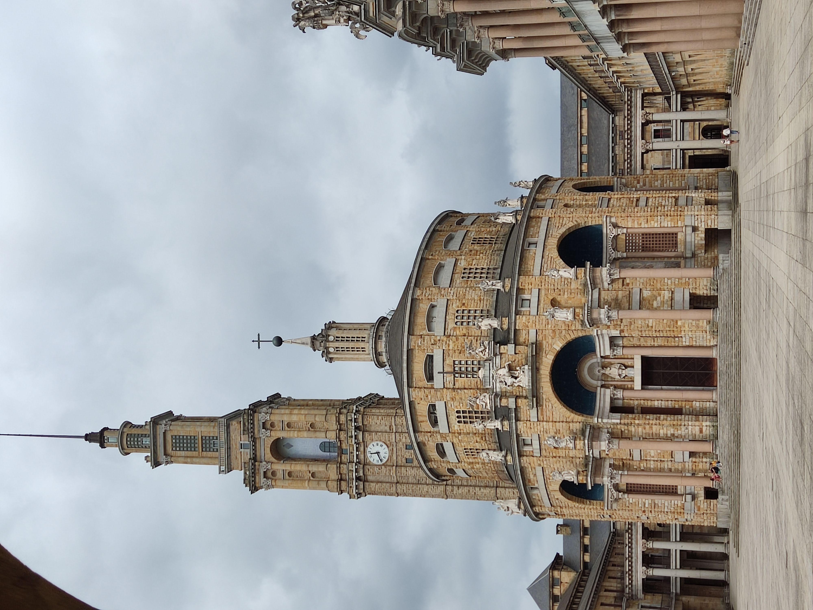

A mediados de los años 1940, como consecuencia de un grave accidente laboral en una mina de la cuenca del Caudal, el subsecretario del Ministerio de Trabajo, Carlos Pinilla Turiño, que acudió al funeral de las víctimas de dicho accidente, se reunió en Gijón con un grupo de personalidades locales como Alejandro Pidal Guilhou; Álvaro Armada Ulloa, octavo conde de Revillagigedo, y Ricardo Heredia Guilhou, tercer conde de Benahavís, lideradas por el industrial minero José María Fernández «el Pontico», para impulsar la creación de un orfanato minero con la intención de ayudar a los afectados. Esta institución se constituyó de manera formal en escritura pública otorgada ante notario el 6 de octubre de 1945 con el nombre de Fundación «José Antonio Girón», en homenaje al entonces ministro de Trabajo.
El objetivo fundacional concreto fue el de formar a niños huérfanos de padres víctimas de accidentes laborales en la minería, para lo que se proyectó un edificio que pudiera atender a mil alumnos y que contara con las distintas dependencias requeridas para el desarrollo de la vida estudiantil, como residencia, escuela, talleres industriales, granja, instalaciones deportivas o campos de cultivo. El Ministerio de Trabajo encomendó a la Junta del Patronato de la Fundación la responsabilidad de llevar adelante la obra por Orden de 14 de junio de 1946. Para ello se adquirieron en la carretera de Gijón a Villaviciosa unos terrenos con una superficie de 1 544 572 m², de los que 381 551 m² lo fueron mediante el trámite de expropiación forzosa. Otra superficie complementaria, de 1 464 300 m², se adquirió para la Granja Lloreda, en El Infanzón.
El edificio está construido de espaldas a la ciudad de Gijón. Luis Moya lo diseñó de este modo a imagen y semejanza del Partenón de Atenas y con la misma intención: que para acceder a su interior hubiera que rodearlo para apreciarlo en toda su magnificencia. Sigue las directrices del estilo neoherreriano y neoclásico, propios de la arquitectura del franquismo.
La planta está conformada en base de un enorme rectángulo, centrado en el gran patio central y con una sucesión de patios interiores de menor tamaño. Destacan las construcciones no rectangulares de la iglesia y el convento, en el extremo oeste del edificio. Una característica del edificio es su asimetría, especialmente visible en la posición de su acceso principal y en la torre así como en el diseño de la planta.
Está situada en la fachada principal, con un arco de entrada rematado en forma de torre. Sobre este arco, de medio punto, se sitúa una cruz de la Victoria con el águila de San Juan y el yugo y las flechas de los Reyes Católicos, adornado con dos ángeles de tenantes.
Situado tras la torre-puerta, es un patio rectangular a la manera de atrium corintio, con diez columnas de granito de diez metros y medio de altura cada una. Su objetivo, en palabras de Moya era «proporcionar la debida impresión de dignidad en el acceso a la gran plaza y preparar su escalada». Tras pasar el atrio, un acceso al patio se convierte en punto de fuga que muestra la torre y la iglesia. En la reforma de 2007 se añade un techo acristalado.
Es un patio descubierto de ciento cincuenta metros de largo por cincuenta de ancho que hace la función de plaza mayor del recinto, estructurándose todo el complejo en torno a él. Tiene unas dimensiones similares a las de la Plaza de San Marcos en Venecia. Se encuentra presidido por la iglesia y su torre al frente, soportales a la izquierda y el teatro neoclásico a la derecha.
La iglesia es sin duda el edificio más espectacular del conjunto arquitectónico de la Universidad Laboral. Con una superficie de 38,40 m por 24 metros, es una de las iglesias de planta elíptica más grandes del mundo. Se aprecia cierta similitud, especialmente interior, con la iglesia de San Agustín de Madrid, del mismo autor.
En el exterior, sobre el dintel de la puerta, está colocada una imagen de la Virgen de Covadonga en una hornacina central y, flanqueándola, cuatro columnas corintias sostienen las imágenes de San José, San Ignacio, San Pedro y San Pablo. La imagen de San José destaca por carecer de cabeza como consecuencia del accidente que se produjo cuando se desprendió la gran esfera metálica situada sobre la puerta de la iglesia. Por encima, el Apóstol Santiago a caballo y dos ángeles adorando una reproducción de la Cruz de la Victoria, símbolo de Asturias, obra del escultor José Espinós Alonso realizada en bronce con incrustaciones de cristales, mármoles y piedras de color.16 También a ambos lados de la hornacina central, otras dieciséis estatuas representan a San Juan de la Cruz, San Juan Bosco, San Vicente Ferrer, San Melchor de Quirós, Santa Clara, San Juan de la Cruz, San Pedro de Alcántara, San Lorenzo, San Isidoro, Santa Teresa de Jesús, Santo Domingo de Guzmán, San Francisco, San José de Calasanz, Santa Eulalia, Fernando III el Santo, San Isidro y Santo Toribio.
El interior se halla cubierto por una cúpula con un peso estimado de dos mil trescientas toneladas y montada sobre 40 nervaduras de ladrillos cruzadas entre sí que sostienen la estructura. La altura desde el suelo hasta el inicio de los arcos de la cúpula es de 25 metros y de 33 hasta el centro del óculo. Por este debería entrar la luz del sol e iluminar el centro de la iglesia, aunque en la actualidad no es así debido a que la cúpula cedió ligeramente.
El peso de la cúpula sin la necesidad de las columnas hizo pensar que se vendría abajo al quitar los andamios y para tranquilizar a los trabajadores y demás personas, Luis Moya organizó una comida con su familia justamente en el día que lo desmontaban en el centro de la iglesia.
El suelo del templo es de mármol en su totalidad, y los bancos, pensados para dar cabida al millar de alumnos de la institución y a sus profesores, son de embero, un tipo de madera de Guinea Ecuatorial. Fueron tallados expresamente para el edificio y cada uno de ellos, diferente de los demás, fue realizado en una sola pieza y destinado a ocupar una posición determinada. Las columnas del baldaquino, de granito rosa de Porriño, también son de una sola pieza, con una altura cada una de 7,75 m.
v
Con la rehabilitación del complejo, la iglesia fue desacralizada, se retiró la simbología religiosa, a excepción de una sencilla cruz, y los bancos. Está destinada a espacio expositivo.